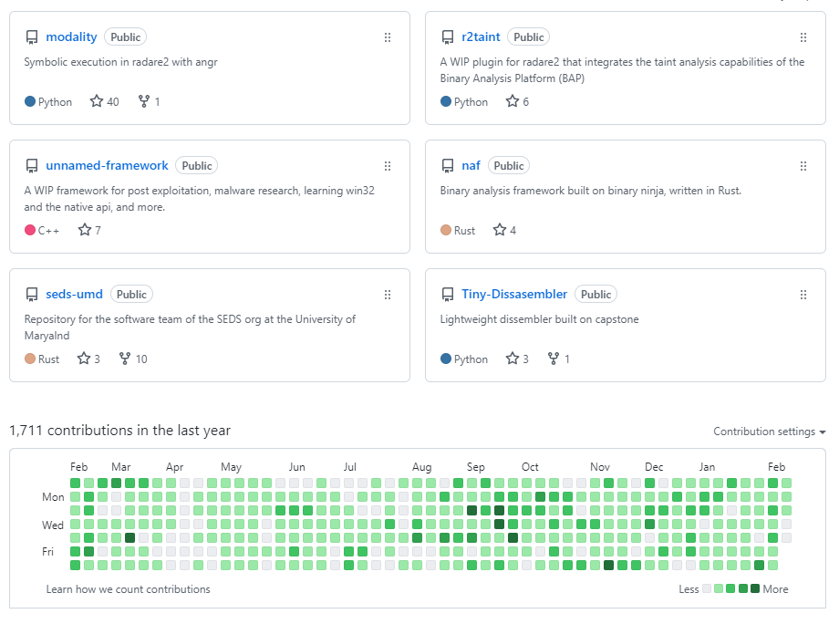

Curriculum Vitae
I'm a recent college graduate with experience in vulnerability research, reverse engineering, software development, digital signal processing, and more. I prefer research-oriented work that utilizes, analyzes, or contributes to emerging technologies.
Work Experience
Procedural Audio
Founder and lead developer of Procedural Audio, which creates novel audio generation and processing tools for musicians, sound designers, and audio developers.
Internship Experience
Margin Research
Performed vulnerability analysis on various IOT devices as part of a "winternship" program, including several surveillance cameras and webcams. I discovered and documented various potential weaknesses in the camera firmware.
Mantech Cooperation
Performed vulnerability analysis on routers, including reverse engineering binaries, reporting on firmware behavior, and documenting various weaknesses
Correct Computation
Worked on binary analysis tools built on top of the BAP (binary analysis platform) framework as part of a startup consisting of students and professors from UMD. Contributed to the struct rewriting functionality of the Checked-C compiler, an extension of clang which includes C/C++ types that ensure memory safety.
Joint Quantum Institute
Programmed ARTIQ (Advanced Real-Time Infrastructure for Quantum Physics) systems to interface with quantum computing experiements. Implemented a laser intensity stabilization system to laser-cool ions. Developed a custom laser safety interface in python called LAGONA.
UMD AUSS Lab
Developed a custom platform to teach students about developing secure drone firmware. Completed trainings in soldering, programming, and cloud-based machine learning.
MPLEX VR
Created virtual environments using tools like Unreal Engine 4, Blender, Maya, Substance Painter, and GIMP. Designed particle effects and destruction simulations in Houdini and UE4.
Precision Alliance
Contributed to a web application to facilitate the configuration and sale of linear bearings, XY stages, and more. Developed scripts to automatically generate these web pages.
Skills
- Programming (Fluent): Rust, C++, C, Dart, Python, Java
- Programming (Proficient): x86 and ARM assembly, OCaml, Ruby, Racket, Javascript, HTML
- Static Analysis: Radare2/Rizin, Ghidra, BinaryNinja, IDA Pro, Capstone
- Debugging: x64dbg, WinDbg, GDB
- Penetration Testing: Metasploit, Nmap, Wireshark, Burp Suite, etc
- Symbolic Execution: Angr, BAP
- Fuzzing: AFL
- Forensics: Volatility, Binwalk
- VFX: Unreal Engine 5, Blender 3D, GIMP, Substance Painter
- Version Control: Git, Subversion
Selected Projects
Soon information will be added here about the Procedural Audio Workstation, Arrow framework, and an open source CMajor compiler.
Presentations
Audio Developer Conference 2022
Abstract: Piracy remains a ubiquitous and persistent problem for audio developers attempting to commercialize their products. This is in part because most custom license checking schemes contain fairly basic mistakes that make it easy for crackers to bypass them. This presentation unveils tricks and techniques commonly used by crackers and explains how they can be made more resistant to common attacks.
Radare2 Conference 2020
Abstract: This talk is an overview the new "Modality" radare2 plugin to perform symbolic execution. The tool is built on top of angr, and provides a faster alternative to using angr than writing scripts. This integration has numerous advantages, including easy switching between concrete and symbolic execution, useful visualizations of the angr backend, as well as a suite of features for vulnerability detection and exploit generation.
Repositories
I am very active on Github, with over 1500 commits in the last year. Below you can see some of my open-source projects and activity over the last year. Click the image for more information.
Education
Degrees
- University of Maryland, College Park (Fall 2017 - Winter 2022)
- Bachelor of Science in Computer Science
- Minor in ACES (Advanced Cybersecurity Experience for Students)
- Additional coursework in physics
- Cetifications
- Completed 3 months of penetration testing training in a lab with 50+ targets
- Mastered tools like nmap, metasploit, wireshark, burp suite, john the ripper, etc
- Completed a 24 hour practical exam that required the exploitation of 3 simulated targets
Selected Coursework
UMD ACES Program
HACS408E (Reverse Engineering): An introduction to software reverse engineering tools and methodologies. Fundamental topics covered: compilers, linkers, loaders, assembly language, as well as static and dynamic analysis tools. This includes computer architecture and low-level systems programming, as well as an introduction to x86_64 assembly language.
HACS408T (Penetration Testing): A hands-on, technically rigorous experience that prepares students for real-world work in penetration testing and offensive security. This course will allow students to gain proficiency and become comfortable using the tools, techniques, and methodologies that represent the state of the art in penetration testing today.
HACS408L (Digital Forensics): Explores the various fields of digital forensics, such as memory, hard drive, and network traffic analysis. This course covered the legalities involved with forensic investigations and the wide variety of digital forensics tools, including both open source and proprietary.
UMD CMNS Department
CMSC412 (Operating Systems): An in-depth understanding of how an operating system virtualizes computer hardware and provides programmers with a machine and device independent interface. Topics covered includes: pipes, fork, signals, semaphores, CPU scheduling, memory paging, file system, etc.
CMSC414 (Computer and Network Security) - An introduction to the topic of security in the context of computer systems and networks. Identify, analyze, and solve network-related security problems in computer systems. Fundamentals of number theory, authentication, and encryption technologies, as well as the related practical problems that have to be solved.
CMSC417 (Computer Networks): The goal of this course was to introduce students to the core concepts of wired and wireless networking. The primary focus will be on the layered architecture and the protocol stacks. It teaches students several concepts, including the Internet architecture, HTTP, DNS, P2P, Sockets, TCP/IP, BGP, Routing protocols, wireless and sensor networking, and Wi-Fi.
CMSC430 (Compilers): Its major goal was to arm students with the ability to design, implement, and extend a programming language. Throughout the course, students designed and implemented several related languages.
Conferences
- ADC: Audio developer conference, Fall 2022
- r2con: Radare2 Conference, Fall 2020
- NACTI: North American Conference on Trapped Ions, Spring 2019
- MAVRIC: Mixed/Augmented/Virtual Reality Innovation Center Conference, Spring 2019
- AIAA: American Institute of Aeronautics and Astronautics, Winter 2019
Teaching
CMSC289J: Introduction to Rust (2021)
A semester-long course at the University of Maryland on the Rust programming language. The course followed the rust book, and I was the primary lecturer for one of the sections, in addition to designing and grading the course assignments with another facilitator.
MCWIC: Algorithmic music generation (2020)
An introductory lecture to the Maryland Center for Women in Computing (MCWIC) on how techniques like markov models and recurrent neural networks can facilitate music generation.
SEDS: Programming for Satellites (2020)
Led the design and implementation of a "boot-camp" for people joining the software team of SEDS at the University of Maryland, to introduce them to the skills needed to develop software for satellites.
Other
UMD Philosophy Club — President
I was president of the UMD philosophy club for 2 years. We had weekly meetings covering topics in philosophy and bi-weekly socials. This experience significantly improved my ability to think methodically, reason clearly, form cogent arguments, lead group discussions, and foster substantive conversations.